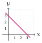
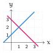

📝 Repaso de la unidad
Actividades de repaso
Escribe tu respuesta y después pulsa «Ver la solución» para corregirla tú. Los puntos dicen el nivel: ● básico, ●●● ampliación.
- \((2,3)\)
- \((3,2)\)
- \((0,4)\)
- \((6,-1)\)
Solución
a) Sí b) No c) Sí d) No
¿Cómo te ha ido?
- \((2,1)\)
- \((1,-2)\)
- \((0,5)\)
- \((4,6)\)
Solución
a) Sí b) Sí c) No d) No
¿Cómo te ha ido?
| \(x\) | 0 | 1 | 3 | 5 | \(-1\) |
| \(y\) |
Solución
\(y=7,\;6,\;4,\;2,\;8\)
¿Cómo te ha ido?
- \(x+y=9\)
- \(2x+y=5\)
- \(y-3x=1\)
- \(x-y=4\)
Solución
a) \(y=9-x\) b) \(y=5-2x\) c) \(y=3x+1\) d) \(y=x-4\)
¿Cómo te ha ido?
- \(x+3y=10\)
- \(x-2y=1\)
- \(2x=6y+4\)
- \(4y-x=3\)
Solución
a) \(x=10-3y\) b) \(x=2y+1\) c) \(x=3y+2\) d) \(x=4y-3\)
¿Cómo te ha ido?
- \(x+y=6\)
- \(y=2x\)
- \(x-y=1\)
Solución
Respuesta abierta. Por ejemplo: a) \((0,6)\), \((1,5)\), \((2,4)\) b) \((0,0)\), \((1,2)\), \((2,4)\) c) \((1,0)\), \((2,1)\), \((3,2)\)
¿Cómo te ha ido?
- \((2,k)\) de \(x+3y=11\)
- \((k,1)\) de \(2x-y=7\)
- \((-1,k)\) de \(3x+2y=7\)
Solución
a) \(k=3\) b) \(k=4\) c) \(k=5\)
¿Cómo te ha ido?
| \(x\) | \(-1\) | 0 | 1 | 2 | 3 |
| \(y\) |
¿Cómo están colocados los puntos?
Solución
\(y=6,\;4,\;2,\;0,\;-2\). Los puntos están alineados: forman una recta.
¿Cómo te ha ido?
- La suma de dos números es 20.
- Un número es 5 unidades mayor que otro.
- El doble de un número menos el triple de otro es 1.
- Tres bocadillos y dos zumos cuestan 12 €.
Solución
a) \(x+y=20\) b) \(x=y+5\) c) \(2x-3y=1\) d) \(3x+2y=12\)
¿Cómo te ha ido?
- Entre Ana y Luis tienen 15 €.
- En un corral hay gallinas y conejos, y se cuentan 30 patas en total.
Solución
Respuesta abierta. Por ejemplo: a) \(x+y=15\): \((10,5)\) y \((7,8)\). b) \(2x+4y=30\): \((5,5)\) y \((7,4)\).
¿Cómo te ha ido?
- \(2x+y=5\)
- \(x-y=2\)
- \(4x-y=1\)
- \(x+2y=6\)
Solución
a) y c). En b) sale \(-2\) y en d) sale 7.
¿Cómo te ha ido?
- Escribe tres soluciones de su ecuación.
- ¿Cuál es su ecuación?

Solución
a) Por ejemplo, \((0,3)\), \((1,2)\) y \((3,0)\). b) \(x+y=3\)
¿Cómo te ha ido?
¿Tiene alguna solución con números naturales la ecuación \(2x+4y=7\)? Explica por qué.
Solución
No. Si \(x\) e \(y\) son naturales, \(2x+4y\) es siempre un número par, y 7 es impar.
¿Cómo te ha ido?
Quiero pagar exactamente 9 € con monedas de 1 € y de 2 €, usando al menos una moneda de cada tipo. Escribe la ecuación y busca todas las formas de hacerlo.
Solución
\(x+2y=9\), con \(x\) monedas de 1 € e \(y\) de 2 €. Hay 4 formas: \((7,1)\), \((5,2)\), \((3,3)\) y \((1,4)\).
¿Cómo te ha ido?
Escribe una ecuación lineal con dos incógnitas que tenga como soluciones \((0,2)\) y \((3,8)\).
Solución
\(y=2x+2\), es decir, \(2x-y=-2\).
¿Cómo te ha ido?
- \(\left\lbrace\begin{array}{l} x+2y=7 \\ 3x-y=7 \end{array}\right.\)
- \(\left\lbrace\begin{array}{l} 2x-y=4 \\ x+y=6 \end{array}\right.\)
Solución
- Sí.
- No.
¿Cómo te ha ido?
- \(\left\lbrace\begin{array}{l} x+y=1 \\ 2x+y=0 \end{array}\right.\)
- \(\left\lbrace\begin{array}{l} 3x+y=-1 \\ x-y=-3 \end{array}\right.\)
- \(\left\lbrace\begin{array}{l} x+2y=4 \\ x-y=1 \end{array}\right.\)
Solución
a) Sí b) Sí c) No
¿Cómo te ha ido?
- \(\begin{cases} x + y = 1 \\ 2x - y = 5 \end{cases}\)
- \(\begin{cases} x - 3y = 5 \\ x + y = 2 \end{cases}\)
Solución
a) Sí. b) No.
¿Cómo te ha ido?
- \(\left\lbrace\begin{array}{l} x+y=4 \\ 2x-y=-4 \end{array}\right.\)
- \(\left\lbrace\begin{array}{l} 3x+y=4 \\ x-y=4 \end{array}\right.\)
Solución
a) Sí b) No
¿Cómo te ha ido?
\(\left\lbrace\begin{array}{l} x+y=5 \\ 2x-y=4 \end{array}\right.\)
Solución
\((3,2)\). Las tres cumplen la primera ecuación, pero solo \((3,2)\) cumple la segunda: \(6-2=4\).
¿Cómo te ha ido?
- \(\left\lbrace\begin{array}{l} y=2x-1 \\ x+y=5 \end{array}\right.\)
- \(\left\lbrace\begin{array}{l} x-y=-2 \\ x+y=4 \end{array}\right.\)
Solución
a) \((2,3)\) b) \((1,3)\)
¿Cómo te ha ido?
\(\begin{cases} x + y = 5 \\ x - y = 1 \end{cases}\)
Solución
Las rectas se cortan en el punto \((3, 2)\): \(x = 3\), \(y = 2\).
¿Cómo te ha ido?
\(\left\lbrace\begin{array}{l} x+y=3 \\ x-y=-1 \end{array}\right.\)

Solución
Las rectas se cortan en \((1,2)\): \(x=1\), \(y=2\).
¿Cómo te ha ido?
- \(\left\lbrace\begin{array}{l} y=x \\ x+y=4 \end{array}\right.\)
- \(\left\lbrace\begin{array}{l} y=3 \\ x+y=5 \end{array}\right.\)
Solución
a) \((2,2)\) b) \((2,3)\)
¿Cómo te ha ido?
- \(\left\lbrace\begin{array}{l} x+y=1 \\ x-y=3 \end{array}\right.\)
- \(\left\lbrace\begin{array}{l} 2x+y=-1 \\ x-y=-5 \end{array}\right.\)
Solución
a) \((2,-1)\) b) \((-2,3)\)
¿Cómo te ha ido?
\(\left\lbrace\begin{array}{l} x+2y=4 \\ x-y=1 \end{array}\right.\)
Solución
Las rectas se cortan en \((2,1)\): \(x=2\), \(y=1\).
¿Cómo te ha ido?
- \(\left\lbrace\begin{array}{l} x+y=5 \\ 2x+2y=10 \end{array}\right.\)
- \(\left\lbrace\begin{array}{l} x+y=5 \\ x+y=8 \end{array}\right.\)
Solución
- Infinitas.
- Ninguna.
¿Cómo te ha ido?
Marca V (verdadero) o F (falso). Después justifica tu respuesta.
No se corrige solo: compruébalo con tu profesor o profesora.
Solución
- Falso.
- Verdadero.
- Verdadero.
¿Cómo te ha ido?
- \(\left\lbrace\begin{array}{l} x+y=2 \\ x+y=-1 \end{array}\right.\)
- \(\left\lbrace\begin{array}{l} y=2x \\ 4x-2y=0 \end{array}\right.\)
- \(\left\lbrace\begin{array}{l} x+y=3 \\ x-y=1 \end{array}\right.\)
Solución
a) Ninguna: rectas paralelas. b) Infinitas: es la misma recta. c) Una: \((2,1)\).
¿Cómo te ha ido?
- \(\left\lbrace\begin{array}{l} 2x-y=3 \\ 4x-2y=6 \end{array}\right.\)
- \(\left\lbrace\begin{array}{l} x-3y=2 \\ 2x-6y=1 \end{array}\right.\)
- \(\left\lbrace\begin{array}{l} x+y=4 \\ x-y=0 \end{array}\right.\)
- \(\left\lbrace\begin{array}{l} 3x+y=5 \\ 6x+2y=7 \end{array}\right.\)
Solución
a) Infinitas b) Ninguna c) Una d) Ninguna
¿Cómo te ha ido?
\(\left\lbrace\begin{array}{l} x+2y=5 \\ 3x+6y=\ldots \end{array}\right.\)
- Para que tenga infinitas soluciones.
- Para que no tenga solución.
Solución
a) 15 b) Cualquier número distinto de 15.
¿Cómo te ha ido?
Escribe una segunda ecuación para que el sistema que empieza por \(x-y=1\) tenga como solución \(x=4\), \(y=3\).
Solución
Respuesta abierta. Por ejemplo, \(x+y=7\).
¿Cómo te ha ido?
Marcos dice que \((1,4)\) es solución del sistema formado por \(x+y=5\) y \(3x-y=11\), porque \(1+4=5\). ¿Tiene razón? Resuelve el sistema.
Solución
No: \((1,4)\) no cumple la segunda ecuación, porque \(3-4=-1\). La solución es \(x=4\), \(y=1\).
¿Cómo te ha ido?
Escribe en la barra de entrada de GeoGebra las ecuaciones \(x+2y=8\) y \(3x-y=3\). Usa el comando Interseca para obtener el punto de corte y comprueba el resultado resolviendo el sistema por sustitución.
📐 Ábrelo en GeoGebra Prueba la actividad moviendo los puntos y los deslizadores.
Solución
\((2,3)\): \(x=2\), \(y=3\).
¿Cómo te ha ido?
Escribe en GeoGebra \(y=2x+1\) e \(y=2x-3\). ¿Se cortan las rectas? ¿Cuántas soluciones tiene el sistema? Cambia el 2 de la segunda ecuación por otro número y observa qué ocurre.
📐 Ábrelo en GeoGebra Prueba la actividad moviendo los puntos y los deslizadores.
Solución
No se cortan: son paralelas y el sistema no tiene solución. Al cambiar el 2, las rectas se cortan en un punto y el sistema tiene una solución.
¿Cómo te ha ido?
Queremos resolver el sistema \(x + y = 10\), \(2x + 3y = 24\). Escribe en la columna A los números del 0 al 10. En B1 escribe =10-A1 y en C1 =(24-2*A1)/3, y arrastra.
- ¿Qué representan las columnas B y C?
- ¿En qué fila coinciden? ¿Cuál es la solución del sistema?
Solución
a) El valor de \(y\) de cada ecuación para cada \(x\). b) \(x = 6\), \(y = 4\).
¿Cómo te ha ido?
Inventa un sistema de dos ecuaciones lineales cuya solución sea \(x=-1\), \(y=4\). Explica cómo lo has construido.
Solución
Respuesta abierta. Por ejemplo, \(x+y=3\) y \(2x-y=-6\).
¿Cómo te ha ido?
- Escribe un sistema que no tenga solución y otro que tenga infinitas soluciones.
- ¿Cómo son las rectas que representan cada uno?
Solución
a) Por ejemplo, \(x + y = 3\) y \(x + y = 5\); \(x + y = 3\) y \(2x + 2y = 6\). b) Paralelas; la misma recta.
¿Cómo te ha ido?
Calcula \(a\) y \(b\) para que \(x=2\), \(y=-1\) sea solución del sistema: \(\left\lbrace\begin{array}{l} ax+y=5 \\ x+by=4 \end{array}\right.\)
Solución
\(2a-1=5\), \(a=3\); \(\;2-b=4\), \(b=-2\).
¿Cómo te ha ido?
¿Para qué valor de \(m\) tiene infinitas soluciones el sistema formado por \(2x+my=4\) y \(x+3y=2\)? ¿Qué ocurre para los demás valores de \(m\)?
Solución
Con \(m=6\) la primera ecuación es el doble de la segunda: infinitas soluciones. Para cualquier otro valor, las rectas se cortan y hay una única solución.
¿Cómo te ha ido?
- \(\left\lbrace\begin{array}{l} y=3x \\ x+y=8 \end{array}\right.\)
- \(\left\lbrace\begin{array}{l} x=2y+1 \\ 3x-y=13 \end{array}\right.\)
Solución
a) \(x=2,\;y=6\) b) \(x=5,\;y=2\)
¿Cómo te ha ido?
- \(\left\lbrace\begin{array}{l} y=x+2 \\ x+y=8 \end{array}\right.\)
- \(\left\lbrace\begin{array}{l} x=4y \\ x+y=10 \end{array}\right.\)
- \(\left\lbrace\begin{array}{l} y=2x \\ 3x+y=15 \end{array}\right.\)
- \(\left\lbrace\begin{array}{l} x=y-3 \\ 2x+y=6 \end{array}\right.\)
Solución
a) \(x=3,\;y=5\) b) \(x=8,\;y=2\) c) \(x=3,\;y=6\) d) \(x=1,\;y=4\)
¿Cómo te ha ido?
- \(\left\lbrace\begin{array}{l} x+y=7 \\ 2x+3y=18 \end{array}\right.\)
- \(\left\lbrace\begin{array}{l} x-y=2 \\ 3x+2y=21 \end{array}\right.\)
- \(\left\lbrace\begin{array}{l} 2x+y=9 \\ 5x-2y=0 \end{array}\right.\)
- \(\left\lbrace\begin{array}{l} x+2y=1 \\ 3x-y=10 \end{array}\right.\)
Solución
a) \(x=3,\;y=4\) b) \(x=5,\;y=3\) c) \(x=2,\;y=5\) d) \(x=3,\;y=-1\)
¿Cómo te ha ido?
- \(\left\lbrace\begin{array}{l} x+y=9 \\ x-y=3 \end{array}\right.\)
- \(\left\lbrace\begin{array}{l} 3x+2y=16 \\ 5x-2y=0 \end{array}\right.\)
Solución
a) \(x=6,\;y=3\) b) \(x=2,\;y=5\)
¿Cómo te ha ido?
- \(\left\lbrace\begin{array}{l} x+y=10 \\ x-y=4 \end{array}\right.\)
- \(\left\lbrace\begin{array}{l} 2x+y=9 \\ 3x-y=11 \end{array}\right.\)
- \(\left\lbrace\begin{array}{l} x+3y=11 \\ -x+2y=4 \end{array}\right.\)
- \(\left\lbrace\begin{array}{l} 4x+y=6 \\ 2x+y=4 \end{array}\right.\)
Solución
a) \(x=7,\;y=3\) b) \(x=4,\;y=1\) c) \(x=2,\;y=3\) d) \(x=1,\;y=2\)
¿Cómo te ha ido?
- \(\left\lbrace\begin{array}{l} x+2y=9 \\ x-2y=1 \end{array}\right.\)
- \(\left\lbrace\begin{array}{l} 3x+y=10 \\ -3x+2y=2 \end{array}\right.\)
- \(\left\lbrace\begin{array}{l} 5x-y=13 \\ 2x+y=8 \end{array}\right.\)
Solución
a) \(x=5,\;y=2\) b) \(x=2,\;y=4\) c) \(x=3,\;y=2\)
¿Cómo te ha ido?
- \(\left\lbrace\begin{array}{l} 2x+3y=13 \\ x-y=-1 \end{array}\right.\)
- \(\left\lbrace\begin{array}{l} 3x+2y=7 \\ 2x-3y=9 \end{array}\right.\)
- \(\left\lbrace\begin{array}{l} 5x+2y=19 \\ 3x+4y=17 \end{array}\right.\)
- \(\left\lbrace\begin{array}{l} 4x-5y=-3 \\ 3x+2y=15 \end{array}\right.\)
Solución
a) \(x=2,\;y=3\) b) \(x=3,\;y=-1\) c) \(x=3,\;y=2\) d) \(x=3,\;y=3\)
¿Cómo te ha ido?
- \(\begin{cases} y = 2x - 1 \\ y = x + 3 \end{cases}\)
- \(\begin{cases} y = 5 - x \\ y = 3x - 7 \end{cases}\)
Solución
a) \(x = 4\), \(y = 7\) b) \(x = 3\), \(y = 2\)
¿Cómo te ha ido?
- \(\left\lbrace\begin{array}{l} y=3x \\ y=x+4 \end{array}\right.\)
- \(\left\lbrace\begin{array}{l} y=4-x \\ y=x-2 \end{array}\right.\)
- \(\left\lbrace\begin{array}{l} x=2y \\ x=y+5 \end{array}\right.\)
- \(\left\lbrace\begin{array}{l} y=2x+5 \\ y=-x-1 \end{array}\right.\)
Solución
a) \(x=2,\;y=6\) b) \(x=3,\;y=1\) c) \(x=10,\;y=5\) d) \(x=-2,\;y=1\)
¿Cómo te ha ido?
- \(\left\lbrace\begin{array}{l} x+y=6 \\ x-2y=0 \end{array}\right.\)
- \(\left\lbrace\begin{array}{l} y-2x=1 \\ y+x=7 \end{array}\right.\)
- \(\left\lbrace\begin{array}{l} 3x+y=11 \\ x-y=1 \end{array}\right.\)
Solución
a) \(x=4,\;y=2\) b) \(x=2,\;y=5\) c) \(x=3,\;y=2\)
¿Cómo te ha ido?
- \(\left\lbrace\begin{array}{l} 3x+2y=11 \\ x-y=-3 \end{array}\right.\)
- \(\left\lbrace\begin{array}{l} 5x-2y=1 \\ 3x+4y=24 \end{array}\right.\)
- \(\left\lbrace\begin{array}{l} x+2y=7 \\ 3x-y=7 \end{array}\right.\)
- \(\left\lbrace\begin{array}{l} 4x-3y=-1 \\ 2x+5y=19 \end{array}\right.\)
Solución
a) \(x=1,\;y=4\) b) \(x=2,\;y=\frac{9}{2}\) c) \(x=3,\;y=2\) d) \(x=2,\;y=3\)
¿Cómo te ha ido?
- \(\left\lbrace\begin{array}{l} x+y=12 \\ x-y=2 \end{array}\right.\)
- \(\left\lbrace\begin{array}{l} 2x+y=8 \\ x-y=1 \end{array}\right.\)
- \(\left\lbrace\begin{array}{l} 3x+2y=7 \\ x+y=3 \end{array}\right.\)
- \(\left\lbrace\begin{array}{l} 4x-y=10 \\ 2x+3y=12 \end{array}\right.\)
- \(\left\lbrace\begin{array}{l} x=3y \\ 2x-5y=2 \end{array}\right.\)
- \(\left\lbrace\begin{array}{l} 5x+3y=-1 \\ 2x-y=4 \end{array}\right.\)
Solución
a) \(x=7,\;y=5\) b) \(x=3,\;y=2\) c) \(x=1,\;y=2\) d) \(x=3,\;y=2\) e) \(x=6,\;y=2\) f) \(x=1,\;y=-2\)
¿Cómo te ha ido?
- \(\begin{cases} 3x + 2y = 16 \\ x - y = 2 \end{cases}\)
- \(\begin{cases} 5x - 3y = 1 \\ 2x + y = 7 \end{cases}\)
- \(\begin{cases} 4x + 3y = 10 \\ 6x - 3y = 0 \end{cases}\)
Solución
a) \(x = 4\), \(y = 2\) b) \(x = 2\), \(y = 3\) c) \(x = 1\), \(y = 2\)
¿Cómo te ha ido?
Resuelve el sistema por sustitución, por igualación y por reducción, y comprueba que obtienes la misma solución.
Solución
\(x=3\), \(y=5\) con los tres métodos.
¿Cómo te ha ido?
- \(\left\lbrace\begin{array}{l} y=5x \\ y=2x+6 \end{array}\right.\)
- \(\left\lbrace\begin{array}{l} x=3-y \\ 2x+5y=12 \end{array}\right.\)
- \(\left\lbrace\begin{array}{l} 3x+4y=10 \\ 5x-4y=6 \end{array}\right.\)
Solución
a) Igualación (las dos tienen \(y\) despejada): \(x=2,\;y=10\). b) Sustitución (\(x\) ya está despejada): \(x=1,\;y=2\). c) Reducción (los coeficientes de \(y\) son opuestos): \(x=2,\;y=1\).
¿Cómo te ha ido?
- \(\left\lbrace\begin{array}{l} x+y=-1 \\ x-y=5 \end{array}\right.\)
- \(\left\lbrace\begin{array}{l} 2x-y=-7 \\ x+3y=0 \end{array}\right.\)
- \(\left\lbrace\begin{array}{l} 3x+y=-5 \\ 2x-y=0 \end{array}\right.\)
- \(\left\lbrace\begin{array}{l} 2x+y=4 \\ 4x-y=5 \end{array}\right.\)
- \(\left\lbrace\begin{array}{l} 2x+2y=3 \\ 4x+6y=7 \end{array}\right.\)
- \(\left\lbrace\begin{array}{l} 5x-y=-9 \\ 3x+2y=5 \end{array}\right.\)
Solución
a) \(x=2,\;y=-3\) b) \(x=-3,\;y=1\) c) \(x=-1,\;y=-2\) d) \(x=\frac{3}{2},\;y=1\) e) \(x=1,\;y=\frac{1}{2}\) f) \(x=-1,\;y=4\)
¿Cómo te ha ido?
- \(\left\lbrace\begin{array}{l} 7x+2y=34 \\ 3x-y=9 \end{array}\right.\)
- \(\left\lbrace\begin{array}{l} 6x-5y=4 \\ 4x-3y=2 \end{array}\right.\)
- \(\left\lbrace\begin{array}{l} 2x+5y=-1 \\ 3x-2y=8 \end{array}\right.\)
- \(\left\lbrace\begin{array}{l} x+y=1 \\ 10x+5y=0 \end{array}\right.\)
Solución
a) \(x=4,\;y=3\) b) \(x=-1,\;y=-2\) c) \(x=2,\;y=-1\) d) \(x=-1,\;y=2\)
¿Cómo te ha ido?
- \(\left\lbrace\begin{array}{l} x+3=y \\ 2y=x+11 \end{array}\right.\)
- \(\left\lbrace\begin{array}{l} 3x=2y+1 \\ y+2x=10 \end{array}\right.\)
- \(\left\lbrace\begin{array}{l} 2(x-y)=4 \\ x+3y=10 \end{array}\right.\)
- \(\left\lbrace\begin{array}{l} 3(x+1)=2y \\ x+y=9 \end{array}\right.\)
Solución
a) \(x=5,\;y=8\) b) \(x=3,\;y=4\) c) \(x=4,\;y=2\) d) \(x=3,\;y=6\)
¿Cómo te ha ido?
Para resolver el sistema formado por \(2x+y=7\) y \(x+y=4\), Lola resta las ecuaciones y escribe \((2x+y)-(x+y)=7+4\), así que \(x=11\). Explica el error y resuelve el sistema.
Solución
\(x=3\), \(y=1\)
¿Cómo te ha ido?
Pedro resuelve por sustitución el sistema formado por \(x+y=5\) y \(2x+3y=12\). Despeja \(y=5-x\) y escribe \(2x+3\cdot 5-x=12\), así que \(x=-3\). Explica el error y resuelve el sistema.
Solución
Falta el paréntesis: hay que escribir \(2x+3(5-x)=12\). Solución: \(x=3\), \(y=2\).
¿Cómo te ha ido?
Para resolver por reducción el sistema formado por \(x+y=4\) y \(3x+2y=10\), Ana multiplica la primera ecuación por \(-2\) y escribe \(-2x-2y=4\). Después suma y obtiene \(x=14\). Explica el error y resuelve el sistema.
Solución
No ha multiplicado el segundo miembro: es \(-2x-2y=-8\). Solución: \(x=2\), \(y=2\).
¿Cómo te ha ido?
Resuelve el sistema y comprueba la solución con la calculadora (si tiene modo para sistemas, úsalo).
Solución
\(x = 3{,}4\), \(y = 2{,}2\)
¿Cómo te ha ido?
Resuelve el sistema y comprueba la solución con la calculadora.
Solución
\(x=2\), \(y=3\)
¿Cómo te ha ido?
Resuelve el sistema formado por \(3x-2y=4\) y \(x+4y=6\). En una hoja de cálculo escribe tu valor de \(x\) en A1 y el de \(y\) en B1. En C1 escribe =3*A1-2*B1 y en D1 =A1+4*B1. ¿Qué números deben aparecer en C1 y D1 si la solución es correcta?
Solución
\(x=2\), \(y=1\). En C1 debe salir 4 y en D1, 6.
¿Cómo te ha ido?
- \(\left\lbrace\begin{array}{l} \frac{x}{2}+\frac{y}{3}=4 \\ x-y=-2 \end{array}\right.\)
- \(\left\lbrace\begin{array}{l} 2(x+1)-y=5 \\ x+\frac{y-1}{2}=5 \end{array}\right.\)
Solución
a) \(x=4,\;y=6\) b) \(x=\frac{7}{2},\;y=4\)
¿Cómo te ha ido?
- \(\begin{cases} \dfrac{x}{2} + \dfrac{y}{3} = 4 \\ x - y = 3 \end{cases}\)
- \(\begin{cases} 2(x + 1) - y = 9 \\ 3x - 2(y - 1) = 13 \end{cases}\)
Solución
a) \(x = 6\), \(y = 3\) b) \(x = 3\), \(y = -1\)
¿Cómo te ha ido?
- \(\left\lbrace\begin{array}{l} \frac{x}{3}+\frac{y}{2}=5 \\ x-y=0 \end{array}\right.\)
- \(\left\lbrace\begin{array}{l} \frac{x+1}{2}=y \\ \frac{x}{5}+\frac{y}{3}=2 \end{array}\right.\)
- \(\left\lbrace\begin{array}{l} 3(x-2)+y=7 \\ \frac{x+y}{5}=1 \end{array}\right.\)
Solución
a) \(x=6,\;y=6\) b) \(x=5,\;y=3\) c) \(x=4,\;y=1\)
¿Cómo te ha ido?
- \(\left\lbrace\begin{array}{l} 2(x+y)-3(x-y)=18 \\ x+y=6 \end{array}\right.\)
- \(\left\lbrace\begin{array}{l} \frac{x}{2}-\frac{y}{3}=0 \\ \frac{x+y}{5}=2 \end{array}\right.\)
Solución
a) \(x=2,\;y=4\) b) \(x=4,\;y=6\)
¿Cómo te ha ido?
Resuelve por reducción cada sistema. ¿Qué igualdad obtienes al final? ¿Qué significa?
- \(\left\lbrace\begin{array}{l} 2x+y=7 \\ 4x+2y=10 \end{array}\right.\)
- \(\left\lbrace\begin{array}{l} x-y=2 \\ 3x-3y=6 \end{array}\right.\)
Solución
a) Se llega a \(0=-4\), que es falso: no tiene solución (rectas paralelas). b) Se llega a \(0=0\): infinitas soluciones (es la misma recta).
¿Cómo te ha ido?
Calcula \(a\) y \(b\) sabiendo que la solución del sistema es \(x=2\), \(y=1\): \(\left\lbrace\begin{array}{l} ax+by=7 \\ bx-ay=4 \end{array}\right.\)
Solución
\(2a+b=7\) y \(2b-a=4\): \(a=2\), \(b=3\).
¿Cómo te ha ido?
En una clase hay 28 alumnos y hay 4 chicas más que chicos. ¿Cuántos chicos y chicas hay?
Solución
12 chicos y 16 chicas.
¿Cómo te ha ido?
Un número es el doble de otro y entre los dos suman 36. ¿Cuáles son?
Solución
\(x=2y\), \(x+y=36\): 24 y 12.
¿Cómo te ha ido?
En un autobús viajan 54 personas y hay el doble de adultos que de niños. ¿Cuántos adultos y cuántos niños hay?
Solución
36 adultos y 18 niños.
¿Cómo te ha ido?
Dos números suman 50 y su diferencia es 14. ¿Cuáles son?
Solución
\(x + y = 50\), \(x - y = 14\): \(x = 32\), \(y = 18\).
¿Cómo te ha ido?
Las edades de un padre y su hijo suman 48 años, y el padre tiene el triple de años que el hijo. ¿Qué edad tiene cada uno?
Solución
\(p + h = 48\), \(p = 3h\): el hijo tiene 12 años y el padre, 36.
¿Cómo te ha ido?
Un rectángulo tiene 50 cm de perímetro y su base mide 5 cm más que la altura. ¿Cuánto miden sus lados?
Solución
\(b + h = 25\), \(b - h = 5\): base 15 cm y altura 10 cm.
¿Cómo te ha ido?
En el cine, 2 entradas de adulto y 3 de niño cuestan 41 €. Una de adulto y 2 de niño cuestan 23 €. ¿Cuánto cuesta cada entrada?
Solución
Adulto 13 € y niño 5 €.
¿Cómo te ha ido?
En una papelería, 3 cuadernos y 2 bolígrafos cuestan 8,20 €, y 2 cuadernos y 5 bolígrafos cuestan 8,40 €. ¿Cuál es el precio de cada artículo?
Solución
Cuaderno 2,20 € y bolígrafo 0,80 €.
¿Cómo te ha ido?
En la cafetería del instituto, 3 bocadillos y 2 refrescos cuestan 13,50 €, y 2 bocadillos y 3 refrescos cuestan 11,50 €. ¿Cuánto cuesta cada cosa?
Solución
Bocadillo 3,50 € y refresco 1,50 €.
¿Cómo te ha ido?
En la frutería, 2 kg de manzanas y 3 kg de naranjas cuestan \(8{,}30\) €, y 3 kg de manzanas y 1 kg de naranjas cuestan \(6{,}50\) €. ¿Cuánto cuesta el kilo de cada fruta?
Solución
Manzanas, \(1{,}60\) €/kg; naranjas, \(1{,}70\) €/kg.
¿Cómo te ha ido?
En un aparcamiento hay coches y motos. En total hay 36 vehículos y 112 ruedas. ¿Cuántos coches y cuántas motos hay?
Solución
20 coches y 16 motos.
¿Cómo te ha ido?
En una hucha hay 25 monedas, unas de 50 céntimos y otras de 20 céntimos. En total hay \(8{,}90\) €. ¿Cuántas monedas hay de cada tipo?
Solución
13 de 50 céntimos y 12 de 20 céntimos.
¿Cómo te ha ido?
La suma de las edades de una madre y su hija es 50 años. Dentro de 5 años la madre tendrá el triple de la edad de la hija. ¿Qué edad tiene cada una?
Solución
Madre 40 años e hija 10.
¿Cómo te ha ido?
En una prueba de 20 preguntas cada acierto suma 3 puntos y cada fallo resta 1. Julia ha contestado todas y ha obtenido 40 puntos. ¿Cuántas ha acertado?
Solución
15 aciertos y 5 fallos.
¿Cómo te ha ido?
Para un concierto en Santander se vendieron 300 entradas. Las de pista costaban 25 € y las de grada 15 €, y se recaudaron 5 900 €. ¿Cuántas entradas de cada tipo se vendieron?
Solución
\(p+g=300\), \(25p+15g=5\,900\): 140 de pista y 160 de grada.
¿Cómo te ha ido?
En un partido de baloncesto, un equipo ha encestado 34 canastas, unas de 2 puntos y otras de 3, y ha conseguido 78 puntos. ¿Cuántas canastas de cada tipo ha metido?
Solución
24 canastas de 2 puntos y 10 de 3 puntos.
¿Cómo te ha ido?
Hace 4 años, la edad de Marta era el doble que la de su primo. Hoy, entre los dos suman 29 años. ¿Qué edad tiene cada uno?
Solución
\(m-4=2(p-4)\), \(m+p=29\): Marta tiene 18 años y su primo, 11.
¿Cómo te ha ido?
Dos ángulos son suplementarios y uno de ellos mide 20° más que el triple del otro. ¿Cuánto mide cada ángulo?
Solución
\(x+y=180\), \(x=3y+20\): \(140^\circ\) y \(40^\circ\).
¿Cómo te ha ido?
Un triángulo isósceles tiene 32 cm de perímetro. El lado desigual mide 4 cm menos que cada uno de los lados iguales. ¿Cuánto mide cada lado?
Solución
\(2x+y=32\), \(y=x-4\): los lados iguales miden 12 cm y el desigual, 8 cm.
¿Cómo te ha ido?
Una empresa de Potes alquila kayaks individuales y dobles para bajar el río Deva. Hoy ha alquilado 18 kayaks y han remado 28 personas. ¿Cuántos kayaks de cada tipo ha alquilado?
Solución
\(i+d=18\), \(i+2d=28\): 8 individuales y 10 dobles.
¿Cómo te ha ido?
Lee el texto y contesta.
Hace más de 1 500 años, en un libro chino de matemáticas atribuido al sabio Sunzi, aparece este problema: «En una jaula hay faisanes y conejos. Si contamos las cabezas, hay 35; si contamos las patas, hay 94. ¿Cuántos faisanes y cuántos conejos hay?». El libro lo resolvía con un truco: imaginar que todos los animales levantan la mitad de sus patas.
- Plantea el problema como un sistema de ecuaciones y resuélvelo.
- Si cada animal levanta la mitad de sus patas, ¿cuántas patas quedan en el suelo?
- Cada faisán queda con una pata en el suelo y cada conejo, con dos. Explica por qué la diferencia entre las patas que quedan en el suelo y las cabezas da el número de conejos.
Solución
a) 23 faisanes y 12 conejos. b) 47 patas. c) \(47 - 35 = 12\) conejos.
¿Cómo te ha ido?
El perímetro de un rectángulo es 36 cm. Si la base aumenta 2 cm y la altura disminuye 2 cm, el rectángulo se convierte en un cuadrado. ¿Cuánto miden sus lados?
Solución
Base 7 cm y altura 11 cm.
¿Cómo te ha ido?
Las cifras de un número de dos cifras suman 9. Si se invierte el orden de las cifras, el número aumenta en 27. ¿Cuál es el número?
Solución
36
¿Cómo te ha ido?
Un comerciante mezcla café de 8 €/kg con café de 12 €/kg para obtener 20 kg de mezcla a 9 €/kg. ¿Cuántos kilos usa de cada clase?
Solución
\(x+y=20\) y \(8x+12y=180\): 15 kg del de 8 € y 5 kg del de 12 €.
¿Cómo te ha ido?
Una barca recorre 30 km río abajo en \(1{,}5\) horas y tarda \(2{,}5\) horas en hacer el mismo recorrido río arriba. ¿A qué velocidad va la barca en agua quieta? ¿Cuál es la velocidad de la corriente?
Solución
Barca, 16 km/h; corriente, 4 km/h.
¿Cómo te ha ido?
Dos ciclistas salen a la vez de dos pueblos separados 30 km y van uno hacia el otro. Se encuentran al cabo de una hora. Uno va 4 km/h más rápido que el otro. ¿A qué velocidad va cada uno?
Solución
\(x+y=30\), \(x-y=4\): 17 km/h y 13 km/h.
¿Cómo te ha ido?
En un instituto hay 500 alumnos. Van en autobús el 40 % de los chicos y el 50 % de las chicas, en total 230 alumnos. ¿Cuántos chicos y cuántas chicas hay?
Solución
\(x+y=500\), \(0{,}4x+0{,}5y=230\): 200 chicos y 300 chicas.
¿Cómo te ha ido?
Si al numerador y al denominador de una fracción se les suma 1, se obtiene \(\frac{1}{2}\). Si a los dos se les resta 1, se obtiene \(\frac{1}{3}\). ¿De qué fracción se trata?
Solución
\(\frac{3}{7}\)
¿Cómo te ha ido?
Lee el texto y contesta.
El polideportivo municipal ofrece dos abonos para la piscina. Con el abono Básico se pagan 20 € al mes y 2 € por cada sesión. Con el abono Plus se pagan 35 € al mes y solo \(0{,}50\) € por sesión. Elena no sabe cuál elegir, porque unos meses va a nadar dos veces por semana y otros meses, cuatro.
- Escribe las ecuaciones del coste mensual \(y\) de cada abono en función del número de sesiones \(x\).
- Resuelve el sistema formado por las dos ecuaciones. ¿Qué significa la solución?
- ¿Qué abono le conviene un mes con 8 sesiones? ¿Y uno con 16?
Solución
a) Básico: \(y = 20 + 2x\). Plus: \(y = 35 + 0{,}5x\). b) Con 10 sesiones: 40 €. c) Con 8, el Básico; con 16, el Plus.
¿Cómo te ha ido?
Lee el texto y contesta.
Hay un viejo problema que se atribuye a Euclides: «Un burro y un mulo caminaban cargados con sacos. El burro se quejaba de su carga y el mulo le dijo: ¿De qué te quejas? Si yo te diera uno de mis sacos, llevaríamos los mismos. Y si tú me dieras uno de los tuyos, yo llevaría el doble que tú».
- Llama \(b\) a los sacos del burro y \(m\) a los del mulo, y escribe las dos ecuaciones.
- Resuelve el sistema. ¿Cuántos sacos lleva cada animal?
- Comprueba la solución con las dos frases del mulo.
Solución
a) \(m-1=b+1\) y \(m+1=2(b-1)\). b) El burro lleva 5 sacos y el mulo, 7. c) \(7-1=5+1=6\) y \(7+1=8=2\cdot 4\).
¿Cómo te ha ido?
🧩 Paso a paso
Así se resuelven los ejercicios tipo de la unidad. Cada bloque es una orden, como en Scratch: los bloques se leen de arriba abajo y los que tienen forma de C se repiten o solo se hacen si se cumple la condición.